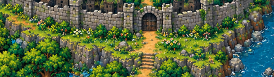

Bản mới r021: sửa các vùng bạn khoanh đỏ.
Khối thực vật và bờ sông trước thành · r020
Vẽ bộ khối mới theo ảnh bạn chỉ, thay vào map thật. Giữ bố cục và đường nước r019.
Chi tiết mẫu người dùng chỉ định

Trước · r019

Trong game · r020

Bộ khối pixel mới

Tách sprite theo ô; không dùng cả tấm atlas để phủ lên map. Ô góc bờ cong dành cho thư viện, chưa đặt trong đoạn sông này.
Cận chân tường

Cận bờ sông

Đã thay vào cảnh
- 18 cụm chân tường,27 cụm mép gò và12 cụm chân gò.
- 18 khối bờ sông và2 cụm đá trong nước.
- Thay86 đối tượng cũ bằng77 cụm mới; bỏ lớp thực vật bờ tự rải trong đoạn liên quan.
- Mặt nghiêng cạnh sông dùng khối đá đứng thay cho texture bị kéo dài.
Build thành công; tổng42 kiểm thử đạt. Cây thấp không tạo vật cản mới; va chạm nước và vách giữ theo địa hình thật.
Vị trí từng khối · Prompt và nguồn asset · Thiết kế284Phạm vi là môi trường trước thành và đoạn sông bên phải. Chưa đánh dấu toàn map giống hoàn toàn bản mẫu.